Contents
- Example script to show SSIT for the Vanderbilt Q_BIO Group
- Create SSIT Model
- Plot the TF/MAPK signal
- Solve and plot using the FSP approach
- Load smFISH Data and compare to model
- Fit the model to the smFISH data
- Does the Model predict a good MAPK(t)?
- Quantifying model Sensitivities.
- Metropolis Hastings
- Iterating between MLE and MH.
- Evaluating the MH results
- Effective Sample Size
Example script to show SSIT for the Vanderbilt Q_BIO Group
In this script, we are going to show how to create, solve and fit a CME model to some single-cell smFISH data. For this example, we will use some data collected in Dr. Gregor Neuert's laboratory at Vanderbilt.
close all clear all addpath('../CommandLine')
Create SSIT Model
First, we are going to create an FSP model for a bursting gene expression model. This model will consist of 3 species: OFF Gene, ON Gene, and mRNA. There will be four reactions: activation, inactivation, transcription and degradation. The activation rate will be assumed to be time varying and controlled by a MAPK signal.
Model = SSIT; % Create SSIT instance and call it 'Model'. % Set species names for bursting gene expression model: Model.species = {'offGene';'onGene';'mRNA'}; % Set species names for bursting gene expression model: % Set Stoichiometry of reactions: Model.stoichiometry = [-1,1,0,0;... 1,-1,0,0;... 0,0,1,-1]; % Define a time-varying TF/MAPK input signal: Model.inputExpressions = {'IHog','(a0+a1*exp(-r1*t)*(1-exp(-r2*t))*(t>0))'}; % Set propensity functions: Model.propensityFunctions = {'offGene*IHog';'k21*onGene';'kr*onGene';'deg*mRNA'}; % Set initial condition (one offgene): Model.initialCondition = [1;0;0]; % Set times (s) at which to compute distributions: Model.tSpan = [0:5:60];
Plot the TF/MAPK signal
Next, we have to gues some initial guesses for parameters. First, let's tinker with the MAPK signal to get it to match somewhat qualitatively to what we see in experiments. We don't have to be exact, ballpark parameters should be fine to start.
Model.parameters = ({'k21',30;'kr',100;'deg',0.005; ...
'a0',0.01;'a1',1;'r1',0.4;'r2',.1});
par = [Model.parameters{:,2}];
t = [0:60];
TF = par(4)+par(5)*exp(-par(6)*t).*(1-exp(-par(7)*t)).*(t>0);
figure(1); plot(t,TF,'linewidth',3);
set(gca,'fontsize',16)
xlabel('Time (min)'); ylabel('Hog1(t)')
% Try tinkering with the MAPK signal parameters (parameters 5-8)to get it
% to match somewhat qualitatively to what we see in experiments: maximum at
% ~2 minutes and adaptation in ~10 min.
% We don't have to be exact, ballpark parameters should be fine to start.

Solve and plot using the FSP approach
To solve the model, we first select the solution scheme ('FSP') and then we call the SSIT.solve method.
Model.parameters = ({'k21',30;'kr',100;'deg',0.005; ...
'a0',0.01;'a1',1;'r1',0.4;'r2',.1});
Model.solutionScheme = 'FSP'; % Set solutions scheme to FSP.
% Set the code to start at steady state at t=0;
Model.fspOptions.initApproxSS =true;
Model = Model.formPropensitiesGeneral('STL1Model');
[FSPsoln,Model.fspOptions.bounds] = Model.solve; % Solve the FSP analysis
% Next we make plots of the marginal distributions at time points 3, 5, 7,
% 9, 11, 13 and plot these in figures 1:3 for the three different species.
Model.makePlot(FSPsoln,'marginals',[3:2:13],false,(1:3)) % Plot marginal distributions
% We can also plot the means and standard deviations versus time in figure
% 100:
Model.makePlot(FSPsoln,'meansAndDevs',[],false,100) % Plot marginal distributions
% Try to tune the parameters until you see:
% Bimodal expression (i.e., a population of active cells and a population of
% inactive cells).
% Perfect adaptation (all mRNA gone) at about 25 min.
% An average of ~50 mRNA at the highest expression time.
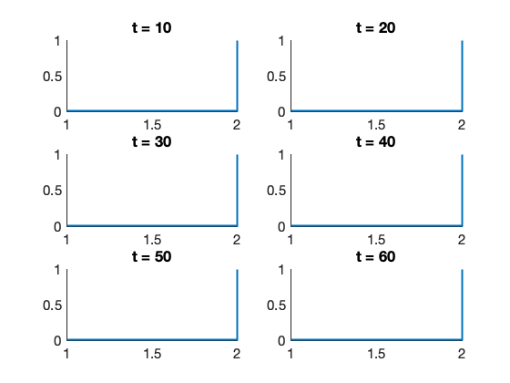 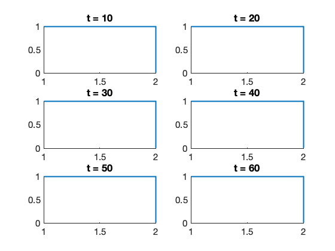 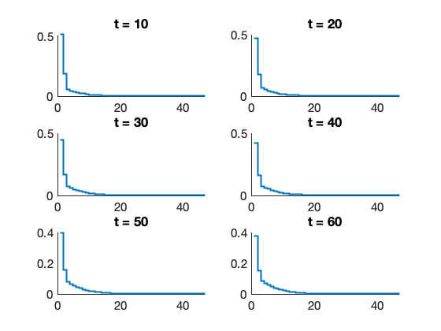 
Load smFISH Data and compare to model
In this section, we load some data to compare to the model. For this example, we are going to use some data that Gregor Neuert collected.
Model = Model.loadData('../ExampleData/NeuertData/Result_Exp1_rep1_RNA_CY5_total_FORMATTED.csv',{'mRNA','mRNA'}); % Next, we call the code to make the fitting plots. Model.makeFitPlot % After running this code, you will see a number of new plots: % * Model and Data Means and Standard deviations versus time. % * Model and Data probability mass functions versus time. % * Model and Data cumulative distributions versus time. % * Maximum Likelihood result versus time. % The first three should be relatively self-explanatory. The fourth one % shows the likelihood function for each of the time points (blue) as well % as the best possible likelihood if the model gave a perfect match (red % line) and in orange what you might expect as a real fit for a perfectly % identified model. In other words, a really good fit would be one where the blue line is % close to the orange line, and the difference provides a sense as to how % much the model could potentially be improved at each time point.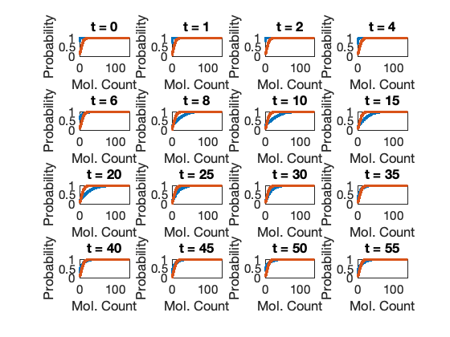 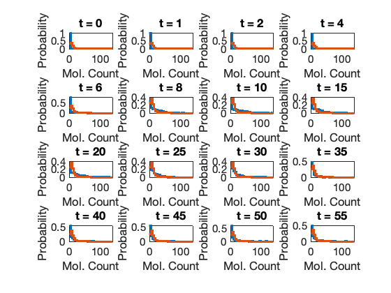
Fit the model to the smFISH data
Once you have an okay guess for parameters, we can use this as an initial guess and let the computer try to identify better parameters. Here, we will start by fitting on the first four parameters.
Model.fittingOptions.modelVarsToFit = [1:7]; % Here we use the current parameters as our initial guess: x0 = [Model.parameters{Model.fittingOptions.modelVarsToFit,2}]'; % Here we call the search process with some fitting options. fitOptions = optimset('Display','final','MaxIter',1000); [pars,likelihood] = Model.maximizeLikelihood(x0,fitOptions); % Update Model and Make Plots of Results Model.parameters(Model.fittingOptions.modelVarsToFit,2) = num2cell(pars); Model.makeFitPlot % As the fit gets a little closer, you can also try to let the model fit % the MAPK signal dynamics as well. For the default data set, % "Result_Exp1_rep1_RNA_CY5_total_FORMATTED", you should be able to get a % fit with the MLE of better than 38500 after a few rounds of fitting.
Optimization terminated: the current x satisfies the termination criteria using OPTIONS.TolX of 1.000000e-04 and F(X) satisfies the convergence criteria using OPTIONS.TolFun of 1.000000e-04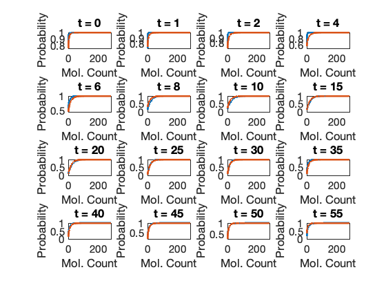 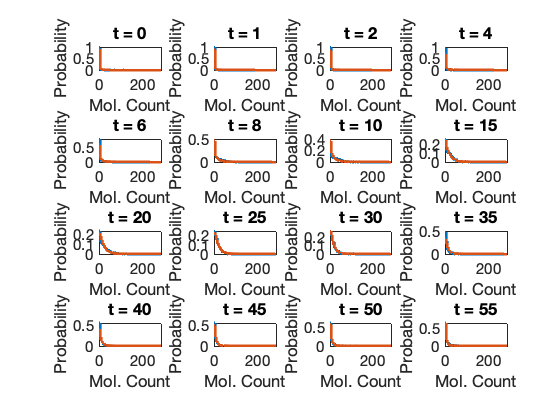
Does the Model predict a good MAPK(t)?
par = [Model.parameters{:,2}];
t = [0:60];
TF = par(4)+par(5)*exp(-par(6)*t).*(1-exp(-par(7)*t)).*(t>0);
figure(25); plot(t,TF,'linewidth',3);
set(gca,'fontsize',16)
xlabel('Time (min)'); ylabel('Hog1(t)')
Quantifying model Sensitivities.
By now, you have found a model that matches okay to your data. (If not, you could add additional states or reactions to the system). But just because you found one model that fits, does NOT mean that is the correct model. There could be an infinite numbr of parameters that all match to the same data. In this section, we are going to search around in parameter space to determine what is the uncertainty in the parameters given our model.
% In this first section, we are going to compute the sensitivity of the % model to the different parameters. Model.solutionScheme = 'fspSens'; % Set solutions scheme to FSP Sensitivity Model.sensOptions.solutionMethod = 'finiteDifference'; [sensSoln] = Model.solve; % Solve the sensitivity problem Model.makePlot(sensSoln,'marginals',[],false,[11:13]) % Plot marginal sensitivities % This will results in a few plots that show how chainging each of the % model parameters would result in changes to the species' distributions. % For later use, we are also going to compute the Fisher Information Matrix. fimResults = Model.computeFIM(sensSoln.sens); [FIM] = Model.evaluateExperiment(fimResults,Model.dataSet.nCells); % The inverse of the FIM provides an estimate of the model uncertainty. % Here we are going to look at the FIM for the log of the model parameters % and use that to compute the covariance of the log of the parameters. % (Because parameters are positive values, but can very significantly in % their magnitudes, it is often useful to examine them in a log-scale). FIMlog = diag([Model.parameters{:,2}])*FIM{1}*diag([Model.parameters{:,2}]); covLog = FIMlog^-1; % The eigenvalues of covLog tells us what to expect for the uncertainty in % the parameters. [eigVec,eigVal] = eig(covLog); eigVal = diag(eigVal) % Here, we see that there is one large direction of uncertainty, but the % rest are pretty well constrained. The direction of the greatest % uncertainty is: [~,j] = max(eigVal); largestEigVec = eigVec(:,j) % in this case the 5th parameter (a1) and the 7th parameter (r2) are % highly anti-corrleated in their uncertainty.
eigVal =
1.20671136367129
0.0847411897270193
0.00517677314466033
2.45203478945118e-05
0.000185629019472577
0.000468808575392802
0.000518568422383651
largestEigVec =
-0.0281504281591572
-0.0308736157293579
-0.0350961026451522
-0.0388252211442232
-0.680435035771915
-0.145492811673743
0.715091073132518
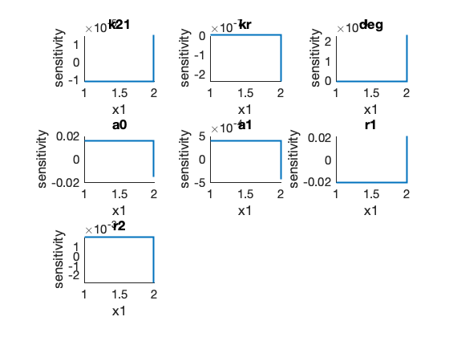 Metropolis Hastings
Now that we have an estimate of the shape of the uncertainty using the FIM we can now search parameter space and see what other parameter combinations are also closely matching to our data. For this, we are going to use the Metropolis Hastings algorithm, where the proposal distribution is a multi-variate gaussian with a covariance that is proportional to the inverse FIM.
% But because the FIM has some very small eigenvalues, we better may be % better off reduceing the step size in those directions. Here, we set it % to at most one order of magnitude by adding an identity matrix to the FIM % before inverting. covLogMod = (FIMlog+1*diag(size(FIMlog,1)))^(-1); % Here, we set up the MH parameters: Model.solutionScheme = 'FSP'; % Set solutions scheme to FSP Sensitivity Model.fittingOptions.modelVarsToFit = [1:7]; MHOptions = struct('numberOfSamples',1000,'burnin',0,'thin',3); proposalWidthScale = 0.4; MHOptions.proposalDistribution = @(x)mvnrnd(x,proposalWidthScale*(covLogMod+covLogMod')/2); % Next, we call the codes to sample the posterior parameter space: [pars,likelihood,chainResults] = Model.maximizeLikelihood([],MHOptions,'MetropolisHastings'); % When this runs, you want to see an acceptance of about 0.3 to 0.4, meaning that % about a third of the proposals are accepted. If the number is too small % you need to decrease the proposal width; if it is too large you may need % to increase the proposal width. For the default data set and model, I % found that a scale of .5 to 5% of the FIM-based COV led to an okay acceptance % rate, but this is variable and will change depending on the initial value % in the chain. % And now to plot the MH results and compare to the FIM. Model.plotMHResults(chainResults,FIMlog); % Often the MH search can reveal a better parameter set, so let's make sure % to update our model if it does: Model.parameters(:,2) = num2cell(pars); Model.makeFitPlot % If you do notice better fits, it would be good to re-run the fminsearch % again - it is possible you can still find a better model to explain your % data. This can take several rounds of iteration before convergence. I % recommend creating a while loop to make it automated.
n=0; acc=0.08. TMPmh_24.mat n=100; acc=0.125. TMPmh_24.mat n=200; acc=0.093333. TMPmh_24.mat n=300; acc=0.09. TMPmh_24.mat n=400; acc=0.084. TMPmh_24.mat n=500; acc=0.071667. TMPmh_24.mat n=600; acc=0.077143. TMPmh_24.mat n=700; acc=0.075. TMPmh_24.mat n=800; acc=0.068889. TMPmh_24.mat n=900; acc=0.067. TMPmh_24.mat n=1000; acc=0.063636. TMPmh_24.mat n=1100; acc=0.066667. TMPmh_24.mat n=1200; acc=0.065385. TMPmh_24.mat n=1300; acc=0.065. TMPmh_24.mat n=1400; acc=0.064667. TMPmh_24.mat n=1500; acc=0.066875. TMPmh_24.mat n=1600; acc=0.069412. TMPmh_24.mat n=1700; acc=0.070556. TMPmh_24.mat n=1800; acc=0.071053. TMPmh_24.mat n=1900; acc=0.0715. TMPmh_24.mat n=2000; acc=0.071905. TMPmh_24.mat n=2100; acc=0.075455. TMPmh_24.mat n=2200; acc=0.075217. TMPmh_24.mat n=2300; acc=0.077083. TMPmh_24.mat n=2400; acc=0.0768. TMPmh_24.mat n=2500; acc=0.076154. TMPmh_24.mat n=2600; acc=0.074074. TMPmh_24.mat n=2700; acc=0.073571. TMPmh_24.mat n=2800; acc=0.072759. TMPmh_24.mat n=2900; acc=0.072. TMPmh_24.mat n=3000; acc=0.07129. TMPmh_24.mat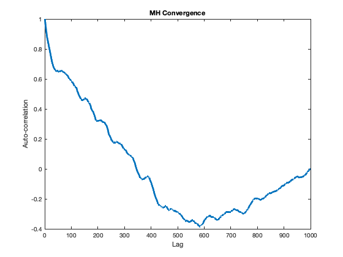 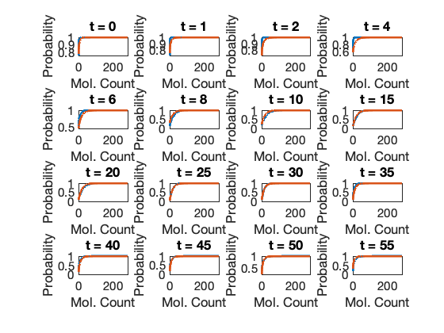 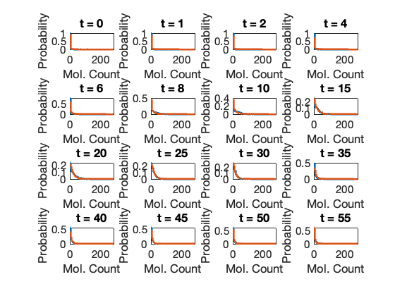
Iterating between MLE and MH.
Let's run a few rounds of MLE and MH to see if we can get better convergence.
Model.parameters(:,2) = num2cell(pars); for i=1:3 % Maximize likelihood pars = Model.maximizeLikelihood([],fitOptions); % Update parameters in the model: Model.parameters(:,2) = num2cell(pars); % Compute FIM Model.solutionScheme = 'fspSens'; % Set solutions scheme to FSP Sensitivity [sensSoln] = Model.solve; % Solve the sensitivity problem fimResults = Model.computeFIM(sensSoln.sens,'log'); FIMlog = Model.evaluateExperiment(fimResults,Model.dataSet.nCells); % Run Met. Hast. covLogMod = (FIMlog{1} + diag(size(FIMlog{1},1)))^(-1); % Adjusted proposal dist. covariance. proposalWidthScale = 0.4; MHOptions.proposalDistribution = @(x)mvnrnd(x,proposalWidthScale*(covLogMod+covLogMod')/2); [pars,likelihood,chainResults] = Model.maximizeLikelihood([],MHOptions,'MetropolisHastings'); % Update parameters in the model: Model.parameters(:,2) = num2cell(pars); end Model.plotMHResults(chainResults,FIMlog); Model.makeFitPlot
Optimization terminated: the current x satisfies the termination criteria using OPTIONS.TolX of 1.000000e-04 and F(X) satisfies the convergence criteria using OPTIONS.TolFun of 1.000000e-04 n=0; acc=0.31. TMPmh_25.mat n=100; acc=0.395. TMPmh_25.mat n=200; acc=0.39. TMPmh_25.mat n=300; acc=0.39. TMPmh_25.mat n=400; acc=0.4. TMPmh_25.mat n=500; acc=0.42. TMPmh_25.mat n=600; acc=0.42571. TMPmh_25.mat n=700; acc=0.43375. TMPmh_25.mat n=800; acc=0.43333. TMPmh_25.mat n=900; acc=0.435. TMPmh_25.mat n=1000; acc=0.43091. TMPmh_25.mat n=1100; acc=0.42917. TMPmh_25.mat n=1200; acc=0.43308. TMPmh_25.mat n=1300; acc=0.43286. TMPmh_25.mat n=1400; acc=0.426. TMPmh_25.mat n=1500; acc=0.42438. TMPmh_25.mat n=1600; acc=0.42941. TMPmh_25.mat n=1700; acc=0.43111. TMPmh_25.mat n=1800; acc=0.42895. TMPmh_25.mat n=1900; acc=0.427. TMPmh_25.mat n=2000; acc=0.42762. TMPmh_25.mat n=2100; acc=0.42545. TMPmh_25.mat n=2200; acc=0.4287. TMPmh_25.mat n=2300; acc=0.42792. TMPmh_25.mat n=2400; acc=0.4312. TMPmh_25.mat n=2500; acc=0.43077. TMPmh_25.mat n=2600; acc=0.42852. TMPmh_25.mat n=2700; acc=0.42929. TMPmh_25.mat n=2800; acc=0.43138. TMPmh_25.mat n=2900; acc=0.43333. TMPmh_25.mat n=3000; acc=0.43484. TMPmh_25.mat Optimization terminated: the current x satisfies the termination criteria using OPTIONS.TolX of 1.000000e-04 and F(X) satisfies the convergence criteria using OPTIONS.TolFun of 1.000000e-04 n=0; acc=0.33. TMPmh_26.mat n=100; acc=0.375. TMPmh_26.mat n=200; acc=0.39667. TMPmh_26.mat n=300; acc=0.4. TMPmh_26.mat n=400; acc=0.408. TMPmh_26.mat n=500; acc=0.41. TMPmh_26.mat n=600; acc=0.40429. TMPmh_26.mat n=700; acc=0.415. TMPmh_26.mat n=800; acc=0.41889. TMPmh_26.mat n=900; acc=0.425. TMPmh_26.mat n=1000; acc=0.42273. TMPmh_26.mat n=1100; acc=0.4175. TMPmh_26.mat n=1200; acc=0.41385. TMPmh_26.mat n=1300; acc=0.41571. TMPmh_26.mat n=1400; acc=0.41933. TMPmh_26.mat n=1500; acc=0.42562. TMPmh_26.mat n=1600; acc=0.42235. TMPmh_26.mat n=1700; acc=0.42111. TMPmh_26.mat n=1800; acc=0.42211. TMPmh_26.mat n=1900; acc=0.424. TMPmh_26.mat n=2000; acc=0.42286. TMPmh_26.mat n=2100; acc=0.42182. TMPmh_26.mat n=2200; acc=0.42304. TMPmh_26.mat n=2300; acc=0.42125. TMPmh_26.mat n=2400; acc=0.4208. TMPmh_26.mat n=2500; acc=0.42038. TMPmh_26.mat n=2600; acc=0.42333. TMPmh_26.mat n=2700; acc=0.4225. TMPmh_26.mat n=2800; acc=0.42345. TMPmh_26.mat n=2900; acc=0.421. TMPmh_26.mat n=3000; acc=0.41839. TMPmh_26.mat Optimization terminated: the current x satisfies the termination criteria using OPTIONS.TolX of 1.000000e-04 and F(X) satisfies the convergence criteria using OPTIONS.TolFun of 1.000000e-04 n=0; acc=0.44. TMPmh_27.mat n=100; acc=0.415. TMPmh_27.mat n=200; acc=0.43667. TMPmh_27.mat n=300; acc=0.4075. TMPmh_27.mat n=400; acc=0.404. TMPmh_27.mat n=500; acc=0.40167. TMPmh_27.mat n=600; acc=0.40286. TMPmh_27.mat n=700; acc=0.38875. TMPmh_27.mat n=800; acc=0.39222. TMPmh_27.mat n=900; acc=0.398. TMPmh_27.mat n=1000; acc=0.39455. TMPmh_27.mat n=1100; acc=0.39417. TMPmh_27.mat n=1200; acc=0.39385. TMPmh_27.mat n=1300; acc=0.395. TMPmh_27.mat n=1400; acc=0.396. TMPmh_27.mat n=1500; acc=0.39937. TMPmh_27.mat n=1600; acc=0.39412. TMPmh_27.mat n=1700; acc=0.39778. TMPmh_27.mat n=1800; acc=0.40105. TMPmh_27.mat n=1900; acc=0.403. TMPmh_27.mat n=2000; acc=0.41048. TMPmh_27.mat n=2100; acc=0.41045. TMPmh_27.mat n=2200; acc=0.40435. TMPmh_27.mat n=2300; acc=0.40542. TMPmh_27.mat n=2400; acc=0.404. TMPmh_27.mat n=2500; acc=0.40077. TMPmh_27.mat n=2600; acc=0.4037. TMPmh_27.mat n=2700; acc=0.4075. TMPmh_27.mat n=2800; acc=0.40862. TMPmh_27.mat n=2900; acc=0.40967. TMPmh_27.mat n=3000; acc=0.41323. TMPmh_27.mat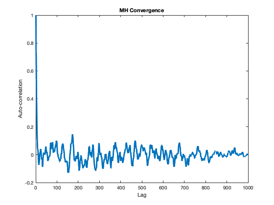 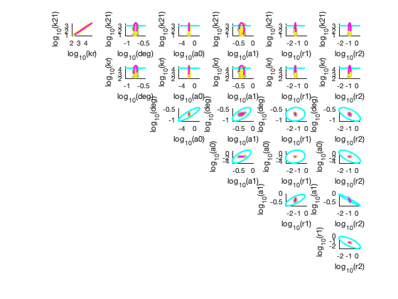
 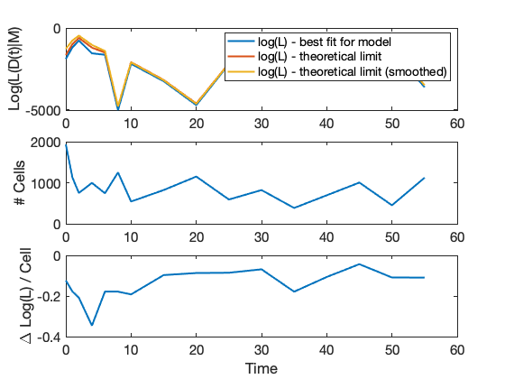
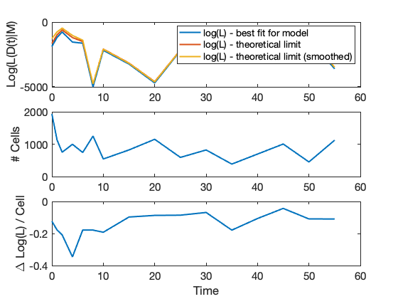 Evaluating the MH results
Here we will generate three plots. The first one will show the Likelihood function as we search over parameter space. In order to get a good estimate of the parameter uncertainty, we want this to quickly reach ts maximum value and then to fluctuate around that value for a significant amount of time. If you see that it is still incereasing, you know that the fit has not yet converged.
figure subplot(1,3,1) plot(chainResults.mhValue) title('MH Convergence') xlabel('Iteration Number') ylabel('LogLikelihood') % Compute FIM Model.solutionScheme = 'fspSens'; % Set solutions scheme to FSP Sensitivity [sensSoln] = Model.solve; % Solve the sensitivity problem fimResultsLog = Model.computeFIM(sensSoln.sens,'log'); FIMlog = Model.evaluateExperiment(fimResultsLog,Model.dataSet.nCells); fimResults= Model.computeFIM(sensSoln.sens,'lin'); FIM = Model.evaluateExperiment(fimResults,Model.dataSet.nCells); % Next, we will show the scatter plot of a couple parameters. It is % helpful to show these in linear scale as well as in a natural log scale. % For illustration, we also compare the spread of the posterior to the % covariance predicted by the FIM from before. % Choose which parameters to compare. Q = [3,4]; subplot(1,3,2) % Plot uncertainty in linear scale Model.makeMleFimPlot(exp(chainResults.mhSamples)',FIM{1},Q,0.95,1); hold on title('Posterior -- Linear Scale') xlabel(Model.parameters{Q(1),1}) ylabel(Model.parameters{Q(2),1}) % Plot uncertainty in log scale subplot(1,3,3) Model.makeMleFimPlot(chainResults.mhSamples',FIMlog{1},Q,0.95,1); hold on title('Posterior -- Natural Log Scale') xlabel(['log ',Model.parameters{Q(1),1}]) ylabel(['log ',Model.parameters{Q(2),1}])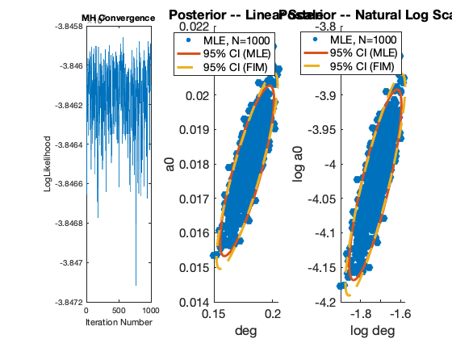
Effective Sample Size
For the MH, it is important to get a sense of how well it has sampled the posterior. For this, we determine the effecitve sample size (i.e., the nuBmber of effectively indpendent samples within the MH chain). This is found by examining the autocorrelation of the parameter chain to figure out the number of steps needed for correlations to decay and then divide the total number of steps by the de-correlation step.
figure ipar = 5; ac = xcorr(chainResults.mhSamples(:,ipar)-mean(chainResults.mhSamples(:,ipar)),'normalized'); ac = ac(size(chainResults.mhSamples,1):end); plot(ac,'LineWidth',3) N = size(chainResults.mhSamples,1); tau = 1+2*sum(abs(ac(2:N/5))); Neff = N/tau
Neff =
41.266228308708